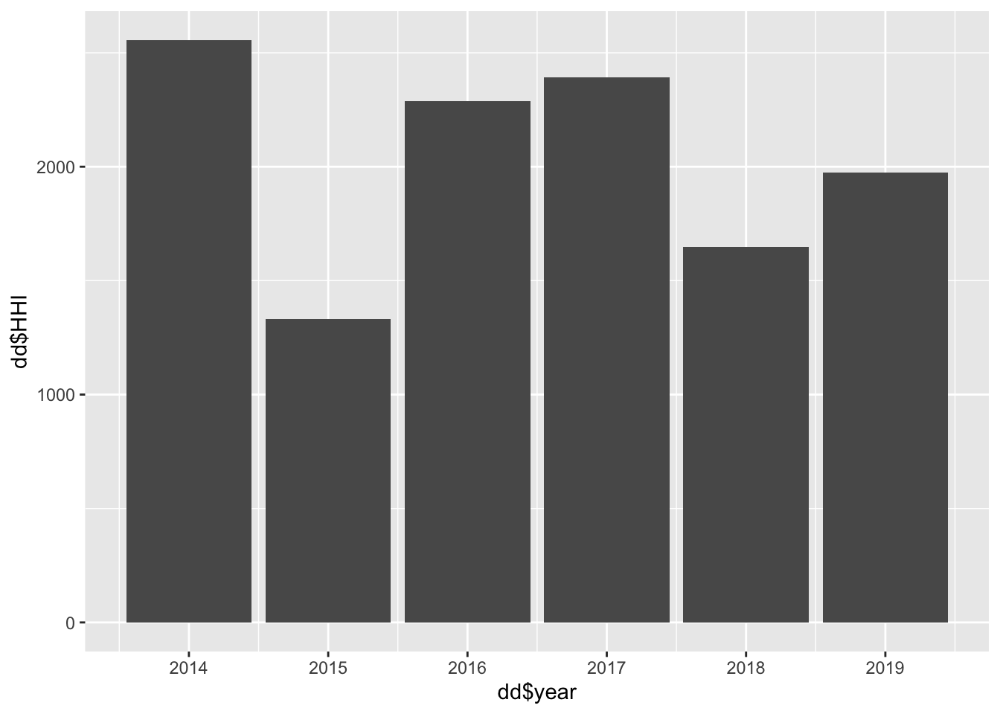

4 Переменные из РИНЦа
Всего в РИНЦе (база Даши) есть 995 организации. Они расположены в 80 82 регионах России из 85 (нет организаций в Ненецком АОк, Чукотском АОк и Ямало-Ненецком АОк).
Кол-во организаций по регионам в таблице ⬇️
У Даши в датасете есть 626 переменных, я не могу разобраться
какие из них лучше брать
на что лучше нормировать, чтобы регионы стали сопоставимы (люди, кол-во организаций)
среднее брать или медиану
Люди из ядра РИНЦа
Я выбрала один из показателей – Число авторов, имеющих публикации, входящие в ядро РИНЦ, за 5 лет и вот что получилось (+добавила кол-во ун-тов в регионе).
Доля классных публикаций
Посчитаем долю (%) публикаций Scopus и Web of Science от общего числа публикаций в организации по такой формуле:
\[ \frac{sco\_wos\_5}{elab\_5 +1} * 100\] где,
\(sco\_wos\_5\) - число статей в журналах, входящих в Web of Science или Scopus, за 5 лет (переменная в кодбуке – N_pub_WOSSC5)
\(elab\_5\) - число публикаций на elibrary, за 5 лет (переменная в кодбуке – N_elibrary5)
Единицу в знаменатель мы добавили, чтобы не отрезать организации, у которых 0 публикаций на elibrary.ru за 5 лет (да, такие тоже есть, 16 из 995). Потом их можно и отрезать, пока сохраним.
После этого агрегируем до уровня региона и пока непонятно, что лучше медиана или среднее, сделаем оба варианта. Т.е. порядок действий важен! У нас такой: по каждой из 995 организаций счиатем долю классных публикаций. Потом группируем по региону и смотрим что в среднем. Сохраню столбец с кол-вом организаций в регионе, чтобы вы не пугались, что мы получили на первых местах Ленинградскую и Томскую области. Я проверила, никакой ошибки. Наши данные говорят именно об этом. Видимо надо вычищать мусор из Москвы (убирать те организации, у которых нули, либо кого-то добавлять в датасет, кого тут нет, но я не очень понимаю кого у нас нет)
Доля классных публикаций V 2.0
Уберем всех у кого за последние пять лет было < 25 публикаций в Скопус и WoS . Всю остальную процедуру сохраним. У нас сразу их 995 организация осталось 525. Ленинградская область всё так же нерушима. Москва подтянулась.
Импакт-фактор журналов
У нас естьпеременная средневзвешенный импакт-фактор журналов, в которых были опубликованы статьи (по годам с 2010 по 2019) (переменные у Даши y2010mean_imp_j и тд)
ЧТО ДЕЛАТЬ С НУЛЯМИ? ЭТО ОЧЕНЬ ВАЖНО! В данных есть три знака: -, NA, 0. Если мы считаем среднее, то:
\((2 + 3 + 0)/3 = 2\)
\((2 + 3 + NA)/2 = 3\) - выбран этот вариант, появились NaN = mean(NA,NA,NA)
Заменяем NaN на 0. ПОДУМАТЬ О ТОМ КАКОЕ ЕСТЬ СМЕЩЕНИЕ И КУДА
Посмотрим на три периода: 2011-2013, 2014-2016, 2017-2019.
Таблица с медианными значениями средневзвешенного импакт-фактора журналов, в которых были опубликованы статьи по этим трем периодам. Mean, min и max просто не влезли, пришлось скрыть.
В таблице еще больший ужас. Камчатка выпрыгнула в топы.
Я проверила, ошибки нет. Такая же табличка с импакт-фактрором, только со средними значениями и я ради наглядности добавила еще столбик с максимумом за период 2017-2019, чтобы было понять, что просто выигрывают регионы, у которых нет стремных универов, которые своими нулями утягивают и медиану и среднее вниз.
HHI
\[HHI=S_1^2 + S_2^2 + ... + S_n^2\],
где \(S_1, S_2 ... S_n\) — выраженные (в процентах) доли регионов.
В случае чистой монополии, когда все гранты будут у одного региона, \(HHI=10000\). Для двух регионов с равными долями \(HHI=50^2 + 50^2 = 5000\), для 100 регионов (у нас столько нет)) с долей в 1 % \(HHI=100\). Таким образом индекс Херфиндаля реагирует на долю каждого региона от общего кол-ва грантов, выданных в стране к конкретном году.
## [1] "region_rus" "region"
## [3] "region_rus_from_map" "region_EN_from_map"
## [5] "inventive_rate2018" "research_expend_region2017"
## [7] "state_subsidy2018" "state_subsidy2018_2"
## [9] "grant_fonds" "other_types_financing"
## [11] "data_jan2019" "phd_students"
## [13] "female" "full_time"
## [15] "selffunded" "n_uni_phd_prog"
## [17] "n_uni_phd_foreign" "n_kandidat_defence2018"
## [19] "n_kandidat_defence_female2018" "n_uni_diss_council"
## [21] "n_phdsupervisors2018" "phd_superv_professor"
## [23] "n_phd_supervisor_female" "n_phd_supervisor_female_prof"
## [25] "n_uni_elibrary" "n_readers_elibrary"
## [27] "n_researchers2018" "n_unis20172018"
## [29] "RNF_grants" "n_researchers_per_grant"
## [31] "n_uni_grants" "n_years_grants"
## [33] "n_categories_grants" "rnf2014"
## [35] "rnf2015" "rnf2016"
## [37] "rnf2017" "rnf2018"
## [39] "rnf2019" "n_org"
## [41] "n_grants_1row" "n_grants_2row"
## [43] "n_grants_3row" "n_grants_4row"
## [45] "n_grants_5row" "n_grants_6row"
## [47] "n_grants_7row" "megagrants_all"
## [49] "n_people_presidentgrant" "ECI"
## [51] "randd_subrank1" "randd_subrank2"
## [53] "research_outputWoS201517" "patents_research_outputWoS201517"
## [55] "call_patents2015" "density_foreign_stud"
## [57] "share_expendscience_region" "n_projects"
## [59] "region_id" "sum_14_19"
## [61] "sh_2014" "sh_2015"
## [63] "sh_2016" "sh_2017"
## [65] "sh_2018" "sh_2019"
## [67] "first_period" "second_period"
## [69] "change2015" "change2016"
## [71] "change2017" "change2018"
## [73] "change2019"
Не забудь про ttest. Катерина правильно сказала, что это незначимая разница по годам.